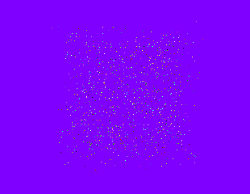
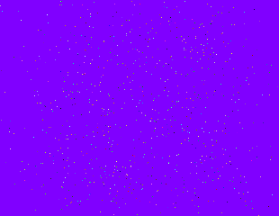

PointSystem.h
A simple illustration of points (single pixel primitives). The points are randomly generated in space and displayed in various colors. You can move the camera through the region that is populated by the points.
|  |  |
|
Point System: PointSystem.h A simple illustration of points (single pixel primitives). The points are randomly generated in space and displayed in various colors. You can move the camera through the region that is populated by the points.
|